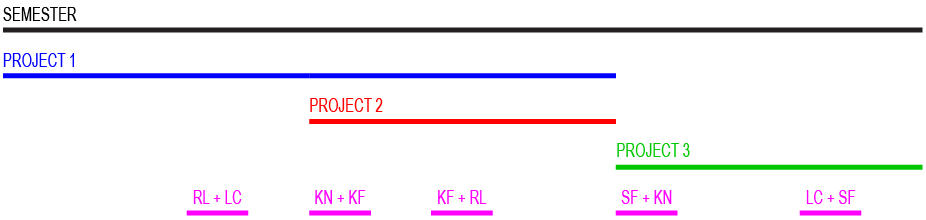

For first-year MFA-D students. This is the first of four studio courses you will take during this 2-year design program. As we begin, consider everything you read, write, make and present from this point forward as additions to a new body of work that will manifest as your thesis. All of your courses will help you develop an iterative process to help jumpstart and connect your new works in unpredictable ways.
You are highly encouraged to incorporate research from your other courses as you develop their project forms in this studio course.
Design Studio is the primary locus for researching, sketching, and developing visual work. Readings, precedents and class discussion will inform a greater understanding of established design structures; independent studio work and critiques will develop your creative response to those structures. Class meetings will consist of primarily four activities: (1) presentation and discussion of relevant works, or precedents, of design, art and media, (2) presentation and discussion of class members’ work at various stages of development, (3) independent sessions, (4) demos for new tools.
Design Studio 1: Initiation is part studio, part conversation seminar about gatherings in three forms: (1) collections in printed publications, (2) online publications, and (3) performative lectures. Multidisciplinary practitioners will visit for lectures, discussions, or workshops with students; including: augmented publications, learning trails, and multi-screen activations. Through hands-on design projects, readings, and discussions, students will delve into different material and social forms of gathering. Demos include an introduction to InDesign, Github, and video editing.
With each prompt, aim to transform your project, altering its meaning and/or its function through choices concerning content, material, visual form, language and sequence. Your decisions are not neutral. Be prepared to articulate why you have compiled this particular collection and its relationship to a larger social context.
See full syllabus
Rutgers New Brunswick campus is on unceded land from the Munsee Lenape tribe. Even for our video calls, Zoom relies on servers at Equinix data centers in Amsterdam, Frankfurt, Hong Kong, Melbourne, New York, Tokyo, Toronto, Silicon Valley & Sydney, according to Rory Solomon, Assistant Professor at the New School. Let’s discuss: Why do we recognize the land? “To recognize the land is an expression of gratitude and appreciation to those whose territory you reside on, and a way of honoring the indigenous people who have been living and working on the land from time immemorial. It is important to understand the long-standing history that has brought you to reside on the land, and to seek to understand your place within that history. Land acknowledgements do not exist in a past tense, or historical context: colonialism is a current ongoing process, and we need to build our mindfulness of our present participation. It is also worth noting that acknowledging the land is indigenous protocol.” (sourced from www.lspirg.org/knowtheland) More information can be found here: native-land.ca
→ Project 1: Research Index
Create a printed research index. With a topic of your choosing, begin to develop the research index, a repository for all your research both within and outside of design. This evolving document catalogs your research throughout the MFA in Design program to actively support the development of your thesis and to feed your design practice beyond graduation. In this class, you’ll begin to develop the taxonomy for the Index and to populate it with: research on your realm of interest; research on the social, cultural, economic and technological issues related to your realm of interest; design and art precedents; annotations for the above items. It is highly encouraged that you add resources from your previous work and current courses into this index.
- References
- Whole Earth Epilog by Stewart Brand
- New Woman’s Survival Catalog by Susan Rennie and Kirsten Grimstad
- A *New* Program for Graphic Design by David Reinfurt
- Reference Guide by Michiel de Cleene
- Hard Copy by Mindy Seu, Charles Broskoski, David Reinfurt
- Local Area Network by Mindy Seu, Jon Gacnik, Jürg Lehni, and A-B-Z-TXT 2018 participants
- Catalog of Typefaces by ABZ ETC INC
- Another Earth Catalog by Fabian Reimann
- The Address Book by Sophie Calle
- An Organized System of Instructions by Martin Beck
- Bookcatalogtest by Triin Tamm
- Taking a Line for a Walk by Nina Paim, Corinne Gisel, Emilia Bergmark
- Unknown Artist by Sophie Auger
- Blueprint for Counter Education by Maurice Stein & Larry Miller
- Better be watching the Clouds by Walid Raad
- McMaster-Carr
→ Project 2: Online Publication
Building upon your research index, create a microsite that offers a narrative complement to your printed catalog. This might be… an interview series, essay anthology, visual research, digital mapping, et al.
- References:
→ Project 3: Performative Lecture
You’ve compiled 10 weeks of research in printed, digital, and social forms. Create a concise and conceptual summary in the form of a 10-minute video essay that will be viewed as a performative lecture.
- References:
→ Community Memory Kiosk
For this one-week group project, please create a community memory kiosk. The Community Memory Project was based in Berkeley, CA in 1976. From their description, they write:
We are placing public computer terminals through which people can freely share information unmediated by censors. Community Memory allows people with no previous computer experience to enter messages, find messages entered by others, and enter responses to what they see. Messages are cross-indexed to related subjects to help people make connections.
- References

Students
Leona Cheung
Kerri Fallat
Sanaz Feizi
Ryan Lilienthal
Kellyn Nettles